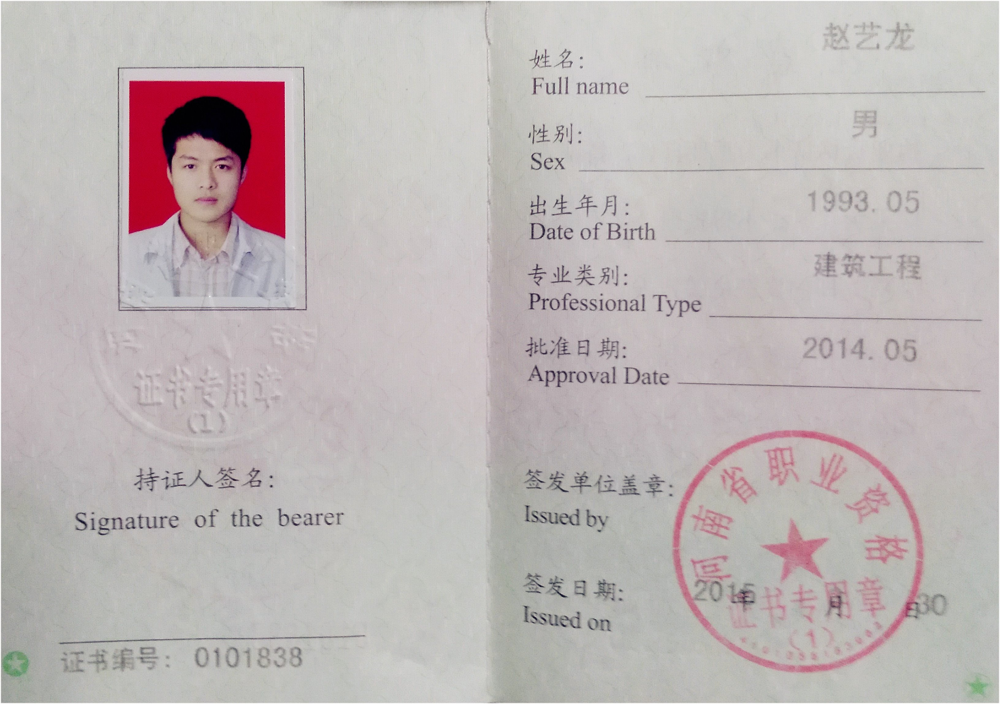

Contact Me
You can contact me using this email address longluv@live.cn.

赵艺龙 男 93年 金牛座 178cm 177-3769-1816
英语专业，2013-2014考取了二级注册建造师、证券从业资格证；
关于我：
关注前沿科技，阅读科普书籍，对科技范围内的智能领域十分感兴趣，也十分敏感，眼看着一件件想象的事情慢慢的实现，为人类的进步而感到高兴。与此同时，地球资源日益枯竭，呼吁人类发展和保护并进。
- 职业：产品经理 7年+
- 标签：达人摄影师，艺术审美指导，短视频微导演
市场嗅觉敏锐，多次参加上海大集团承办的创新创业比赛，其中两次获得仪电集团双创比赛的三等奖5000元，一次通过新的智能镜子载体作为智能家居中心的硬件和服务方案获奖且获得资本200万邀约，另一次通过改进室内导航定位不准确，附件成本高的问题，通过分层静态结合动态的导航方案获奖。
